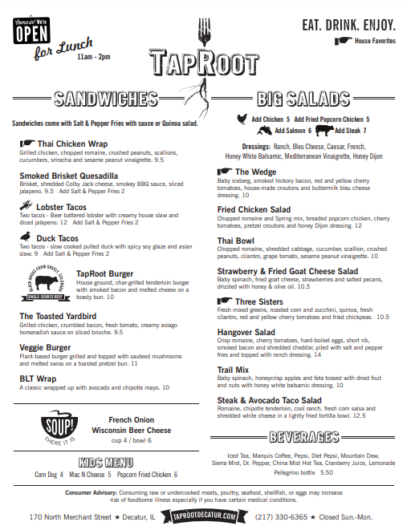
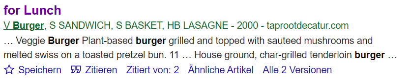
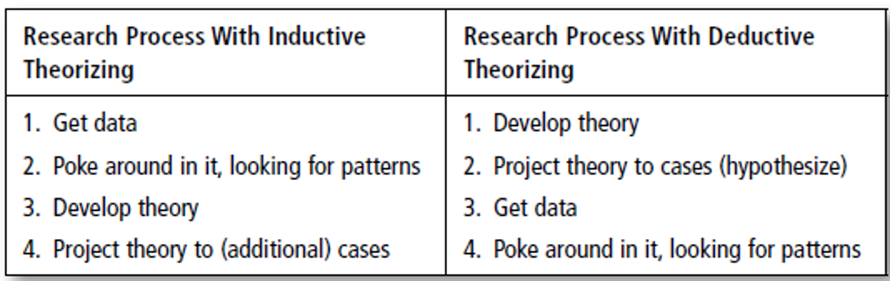
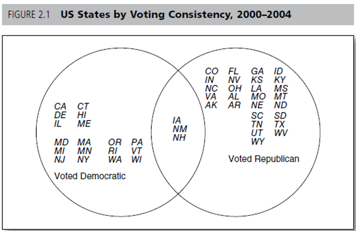
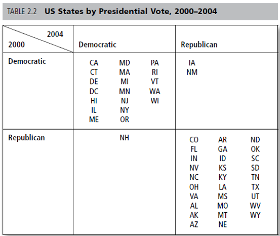
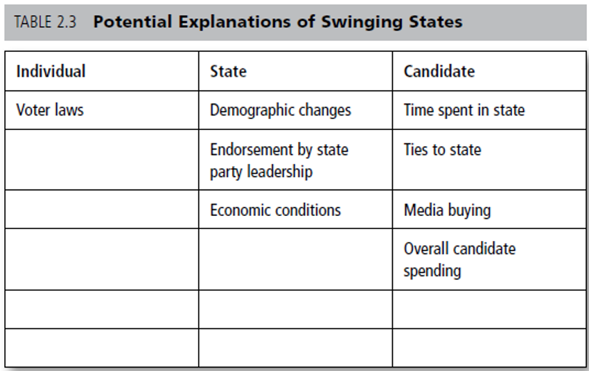

Week 3
University of Mannheim
October 25, 2023
Check in last session - Could you follow along?
Literature review
What makes a good literature review
Types of literature & finding literature
Google Scholar & Zotero
Chapter 3 - Powner, L. C. (2015). Empirical Research and Writing: A Political Science Student’s Practical Guide. Los Angeles: Sage.
⏸️ 15 minute break: Get some fresh air, a coffee, …
❔ Also, time for questions.
Building theory
What are the building blocks of a good theory?
From research question to theory
From theory to hypotheses
Check in - Any questions?
Based on Chapter 2 - Powner, L. C. (2015). Empirical Research and Writing: A Political Science Student’s Practical Guide. Los Angeles: Sage.
Remember?
Why do presidents spend so much time talking about foreign policy during the campaign when only 1-2% of voters base their votes on it?
How do countries’ economic interests affect their positions on the war between Russia and Ukraine
What are the consequences of climate change?
Why does the political left become social democratic in some Latin American countries and populist in others?
Note: Partially based on Powner, 2015.
… contributes to the explanation of the dependent variable
… gives you (and later in condensed form the reader) a good overview of existing studies
… can be found via literature databases
Short exercise ~10 minutes
What makes a good literature review?
What is not a good literature review?
If your are unsure, have another look at: Chapter 3 - Powner, L. C. (2015). Empirical Research and Writing: A Political Science Student’s Practical Guide. Los Angeles: Sage.
Juxtaposition of literature: article after article
(Historical) background of a topic or the cases under investigation
Tracing the process of literature research
Telling the reader about every article or book you have read
Read published articles in good journals to see how a literature review can (or should) be structured.
Stress your contribution!
You have to show that your idea adds to the existing literature.
Highlight the research gap.
Short and precise presentation of the literature
… which is relevant to your research question,
… and fits to your theoretical argument!
Monographs
Collected volumes
Articles in journals
Other literature such as conference or working papers
Review articles
They do not make an empirical or theoretical contribution of their own. Objective : To classify / survey the literature on a particular area. E.g., Annual Review of Political Science publishes exclusively review articles.
Review chapters in edited volumes can serve similar purpose, but quality varies. E.g., Oxford Handbooks series
Review articles are a good starting point, but pay attention to how old the article is.
Recommendations
The newest research is primarily published in academic journals.
It is unusual that new research is published via monographs or collected volumes.
Textbooks can be a great way to engage with a new strand of literature for the first time.
There are many! Their relevance also depends on your research focus.
They are ranked by Google Scholar, Scimago, etc.
There are databases such as SSCI that only list serious journals
Steps to check journals:
Is it peer-reviewed?
Do you know the editors?
Is it ranked?
Do you know researchers that have published there?
American Political Science Review
American Journal of Political Science
Journal of Politics
British Journal of Political Science
Political Analysis
Political Science Research and Methods
European Journal of Political Research
West European Politics
International Organization
Journal of Peace Research
Comparative Political Studies
Journal of Democracy
International Security
Indexes hundreds of millions (!) of texts (Gusenbauer, 2019) if you can’t find it on find it on Google Scholar, it probably does not exist
Mostly very easy to retrieve full texts
Good tools, such as clear citation information
Interdisciplinary (also a disadvantage)


No quality check
Less tools than other data bases
Interdisciplinary (also an advantage)
Short introduction
Pros
Cons
Conduct your search for literature with other tools and access the literature then via the university library!
Short exercise ~10 minutes
Look for articles or books related to your research question via Google Scholar
Try to access them
Use the cited by function to have a look at further, similar articles
Create a literature matrix in Word or Excel and fill in the article you found
Important links
Download, here you also find popular plugins
Plugins for Word, LibreOffice and Google Docs should be installed automatically
Short introduction
.. a reasoned and precise speculation about the answer to a research question, including a statement about why the proposed answer is correct.
King et al., 1994, p.19
… proposes an answer to the research question and tells why that answer is expected by specifying a mechanism, some chain of events or reactions or changes, that connects the independent (cause) variable(s) with the dependent (outcome) variable
… simplifications of reality …
Powner, 2015, p.22
To be clear, theorizing is not about having brilliant insights. Theories don’t have to be earth shattering or make seminal contributions to the field. They simply have to explain some phenomenon, and often the most obvious or commonsense explanation is the correct one. Don’t worry about trying to do something new that no one has done before. To be honest, most theory in political science is of the “well, yeah,” or “no, duh” level of brilliance: It’s an obvious, common sense answer to a question. But all theories, even commonsense ones, need to be stated and tested before we can accept them. Take a question that interests you, think about an answer, and go from there.
Powner, 2015, p.22
What do you expect? A short form of the answer to the research question.
You will usually already have a first version of it in mind when you formulate your research question
… mechanism:
Why does X lead to Y?
What are the intermediate steps that a change in the independent variable leads to a change in the dependent variable?
Different mechanisms can lead to the same results!
Note: X - independent variable, Y - dependent variable.
Assumptions about how the world works that must be true, for your theory to work
Mostly implicit, some things are either so obvious or so established in a field of research that you don’t need to mention it
Often too simplistic, but necessary to explore very complex issues
You do not check these assumptions in your work!
… conditions:
Fore what cases do you think your theory should apply to? And why?
For example, comparative research on European politics:

Steps are (almost) the same, but different order!
Inductive: individual cases, theory development based on these cases
Deductive: Development of theory through abstract analysis, followed by testing with data (mainly quantitative research)
General notes
Venn diagrams, crosstabs, arrow diagrams that we we discuss today mostly do not belong in your homework, but will help you in the process
Iterative process, you continue to think about your theory as you write, interact with colleagues and faculty, and change it as you go along.
When writing: take cues from articles published in (peer-reviewed ) journals
Expectations
Good research questions have several possible answers
Find several possible answers and find out which are the strongest explanations for your question. You need the literature to do this!
While you are doing your literature review, your theory will also be changing. That is fine!



From research question to theory
In small groups, find a better explanations for each of the following questions and apply it to an example ~20 minutes
Q: Why do some incumbents lose elections?
A: They receive less votes than other candidates.
Q: Why do countries found new international organizations?
A: Because they want to.
Q: Why do some fringe political groups resort to violence (terrorism) and others do not?
A: They think violence is the right answer.
Causal mechanism
There can be different mechanisms that link the same variables.
E.g., the example from Powner on economic development and environmental pollution:
Causal mechanisms
In small groups, find a causal mechanism between these phenomena ~10 minutes
Corruption in government agencies ➝ ? ➝ Probability of a financial crisis
Unequal power structures between two states ➝ ? ➝ Probability of war
Higher education among women ➝ ? ➝ Economic development
Assumptions
We make many assumptions about the political and social world. Be aware, what assumptions you make and what assumptions you have to state explicitly.
For example, assumptions when studying factors that influence voting behavior in Austria:
Voting choice is free
Voters act rational or maximize their payoffs
Citizens vote strategically
Scope conditions
To which cases, do you think your theory applies?
Often obviously determined by the topic/research question: EU legislation you cannot be studied back to 1900; Presidential elections not in the UK
Mostly, though, a bit harder: consider, based on your expectations, mechanisms and assumptions, to which cases your theory should apply!
Hypotheses are derived from theory and are based on observable implications of the theories
Patterns that should hold true if your theory is correct.
If your theories contain concepts, you should break them down to indicators here
Probabilistic hypotheses: The more … , the higher … statements (more common in social sciences)
Deterministic hypotheses: If … , then… statements (less frequent in social sciences)
Examples
Veto players (Tsebelis, 1995): The possibility to change policy depends on the number of actors and their ideological position. Hypotheses?
The more coalition partners are in government, the less likely is a change in policy.
The further apart coalition partners ideologically, the less likely is a change in policy.
Policy change is less likely in federal states than in unitary states.
Preview: Concepts
Concepts can be operationalized differently with variables!
We need to be able to measure these variables.
How would you operationalize poverty?
For example, having less disposable income than 2.15 US-Dollar per day (World Bank)
Conduct a literature search for your research question and describe your strategy in few sentences.
Find 10 articles or books (chapters) that might be relevant for your research question. Tip: Skim the articles’ abstract and/or introduction. At least 5 texts should be (peer-reviewed) published in academic journals
Hand in a list of the articles in a PDF document via e-mail until Tuesday, 07.11., by noon (12:00).
Have a look at these blog posts by Raul Pacheco-Vega regarding reading strategies.
Chapter 4 - Kellstedt, P. M., & Whitten, G. D. (2018). The fundamentals of political science research. Cambridge University Press.
Guiding questions:
How can we read (more) efficiently?
What research designs are there?
How to evaluate a research design?
Applied Methods of Social Sciences | Winter semester 2023/24 | University of Innsbruck